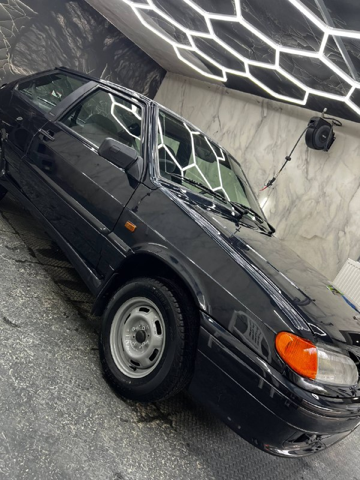
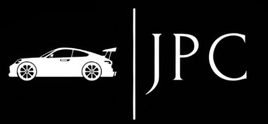
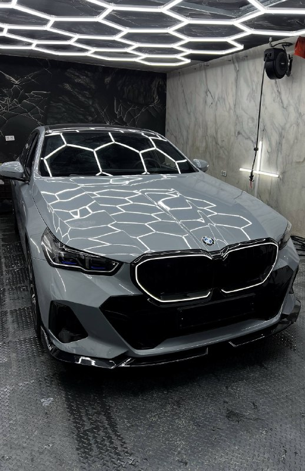
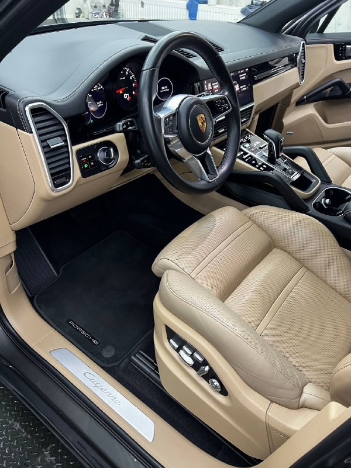

СМОТРЕТЬ В TELEGRAM ↗ВАЗ 2113.
Полировка и защита.
Полировка и керамика кузова, очистка остекления от водного камня, антидождь и уход за салоном.

Вплоть до мелочей.
Работаем с тем, что вы замечаете каждый день: чистотой салона, цветом кузова, состоянием деталей. Осматриваем автомобиль, объясняем решение и показываем результат.
Посмотреть работы
Автомобили, которые прошли через студию. У каждого — своя задача и свой состав работ.

СМОТРЕТЬ В TELEGRAM ↗Полировка и керамика кузова, очистка остекления от водного камня, антидождь и уход за салоном.

СМОТРЕТЬ В TELEGRAM ↗Светлая кожа и пластик требуют точной работы по материалам. На фото — салон после химчистки.
От регулярного ухода до восстановления поверхности. Если не знаете, какая процедура нужна, начните с фотографии автомобиля и короткого сообщения.
Спросить у мастераНе предлагаем процедуру до того, как увидим автомобиль и услышим вашу задачу. Это простой порядок, который экономит и время, и деньги.
Осматриваем машину или фотографии. Спрашиваем, что именно хочется изменить.
Согласовываем состав работ, стоимость и срок. Объясняем, какой результат реален.
Приводим автомобиль в порядок и проверяем детали перед выдачей.
Зависит от состояния автомобиля и набора процедур. Назовём срок после оценки конкретной задачи.
Не каждую царапину можно убрать полностью без покраски. Иногда полировка делает её заметно менее выраженной. Сначала посмотрим повреждение.
Пришлите фото и опишите задачу в Telegram. После уточнения деталей предложим состав работ и стоимость.
Расскажите, что хотите изменить в автомобиле. Подскажем, с чего начать.
НАВЕРХ ↑